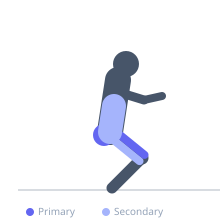
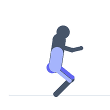

Exercise guide / Hatfield Safety Squat Bar Squat
Hatfield Safety Squat Bar Squat
A squat performed with a safety squat bar while the hands brace against the upright posts of a power rack. The rack contact eliminates balance demands, allowing higher training intensities or deeper ranges of motion. The SSB's camber promotes an upright torso naturally, making this a useful tool for athletes with shoulder or wrist mobility restrictions.
Primary muscles
rectus femoris
vastus lateralis
vastus medialis
vastus intermedius
gluteus maximus
Secondary muscles
biceps femoris long head
erector spinae
Stabilizers
transverse abdominis
gastrocnemius medial
Equipment
Safety Squat Bar
Power Rack (Squat Cage)


Starting position
- Stand inside a power rack with the safety squat bar on your upper back. Grip the rack uprights at a comfortable height with both hands.
Setup
- Set the SSB in the rack at the correct height. Load the bar. Stand inside the rack and grip the uprights before unracking.
Steps
- Step 1: Brace your core and unrack the bar, gripping the uprights lightly.
- Step 2: Descend into a squat while keeping hands lightly on the rack uprights for balance — do not press off the rack to aid the ascent.
- Step 3: Reach depth (at or below parallel) with an upright torso.
- Step 4: Drive through the heels to return to standing.
Coaching cues
- Sit between your heels
- Use the rack for balance only, not assistance
Breathing
- Inhale and brace before descent. Exhale during the ascent.
Range of motion
- Squat to at least parallel. The SSB's camber angle naturally encourages an upright torso.
Tempo
- 3-1-2-0
Common mistakes
- Pressing hard off the rack uprights to cheat the ascent
- Excessive forward lean due to overloading
Safety
- Use the uprights only for balance — pressing off them turns this into an assisted exercise rather than a true squat
Training
- strength: 3–8 reps
- hypertrophy: 8–15 reps
- strength: 3–5 sets
- hypertrophy: 3–4 sets
- Rest: {'strength': 180, 'hypertrophy': 90}